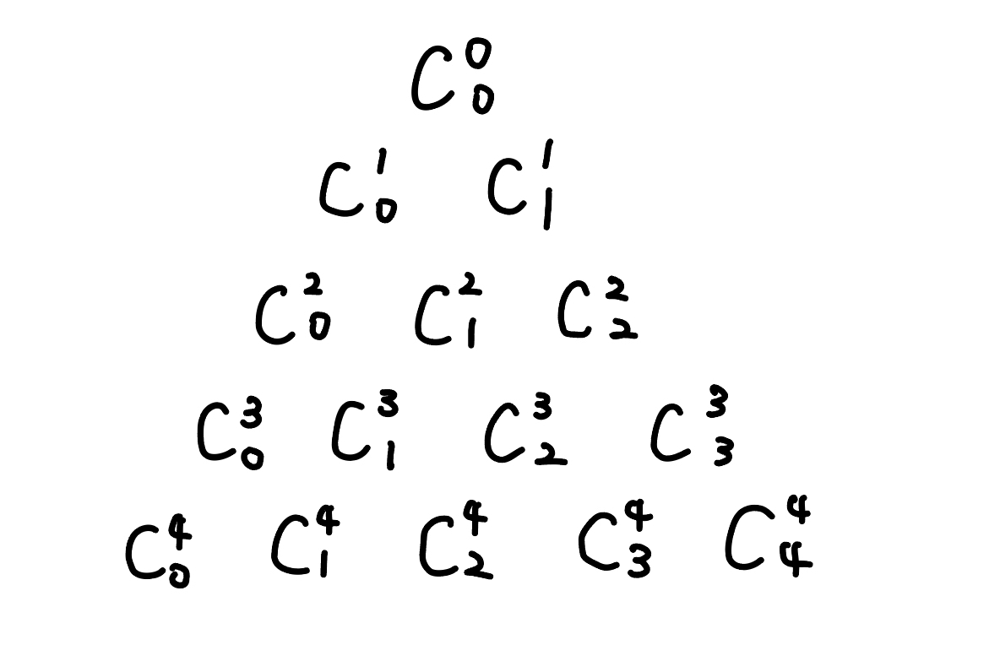
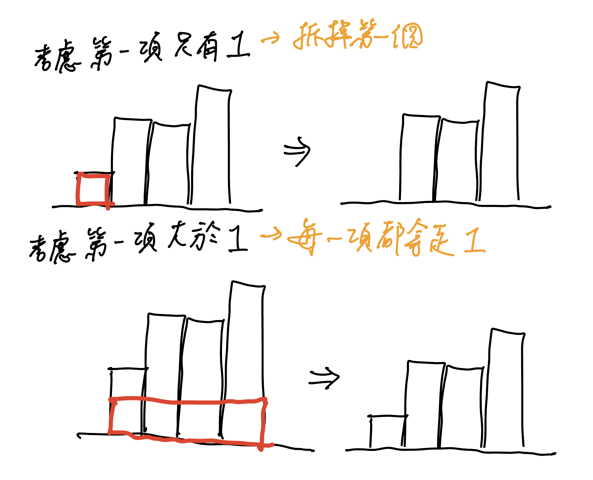
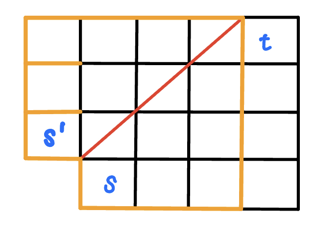
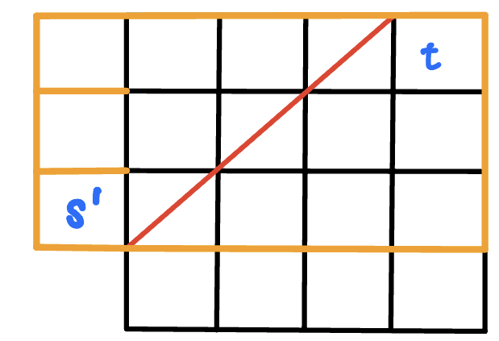
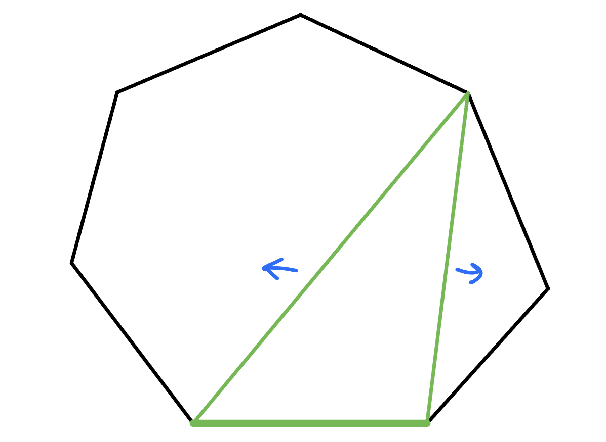
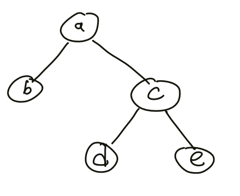
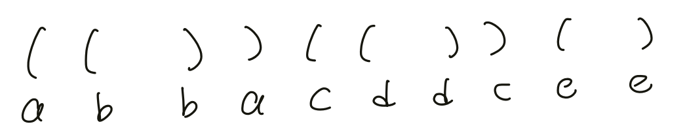

組合
組合數計算¶
一覽¶
-
答案不做 mod
- \(10^6\) 次查詢 \(n,k\le 64\) → 暴力建表
-
答案 mod \(P\) ， \(P\) 是質數
- \(10^6\) 次查詢 \(n,k\le 10^6,P=10^9+7\) → 模逆元建表
- \(10^6\) 次查詢 \(n\le 10^9, k\le 30,P=10^9+7\) → 乘法 + 模逆元
- \(10^5\) 次查詢 \(n,k\le 10^{18},P\le 10^6\) → Lucas 定理
一、暴力建表¶
範圍 :
- 答案不做 mod，\(10^6\) 查詢，\(n,k\le 64\)
第 \(n\) 個東西拿 or 不拿，得 \(C^n_k=C^{n-1}_{k-1}+C^{n-1}_k\)
code
二、模逆元建表¶
範圍 : 答案 mod 質數，\(10^6\) 次查詢 \(n,k\le 10^6,P=10^9+7\)
推導轉移式
令 \(m=k\times i + r\)，其中 \(k = \left\lfloor \frac{m}{i} \right\rfloor,r = m \bmod i\)，則
code
三、乘法 + 模逆元¶
範圍: \(10^6\) 次查詢 \(n\le 10^9, k\le 30,P=10^9+7\)
一項一項乘即可，除法部分需使用模逆元
-
法1:
- \(A = n \times (n - 1) \times \ldots \times (n - k + 1) \mod{P}\)
- \(B = (k!) \mod{P}\)
- \((A / B) \mod{P} = A \times \texttt{inv}(B) \mod{P}\)
- 所以只需要 \(O(k)\) 去計算 \(A,B\) 然後取 \(\texttt{inv}(B)\) 即可，總複雜度 \(O(k+\log P)\)
-
法2:
- \(n/1 \times (n-1) / 2 \times (n-2) / 3 \times \ldots \times (n-i+1) / i\)
- 也可以說是在帕斯卡三角形「橫著走」
- 每項都取模逆元，總複雜度 \(O(k\log P)\)
Atcoder abc156 D - Bouquet
有 \(n\) 個不同的花，要挑其中非 \(0\) 個出來，但不能挑 \(a\) 個或 \(b\) 個
\(n\le 10^9,a,b\le 10^5\)
思路
答案為 \(2^n-1-\binom{n}{a}-\binom{n}{b}\)
四、Lucas 定理¶
範圍 :
-
答案 mod 質數，\(10^5\) 次查詢 \(n,k\le 10^{18},P\le 10^6\)
-
答案 mod 合數，\(n \le 10^9, k=30, M \approx 10^9\)
- 中國剩餘定理分解出質數，然後套用 Lucas 定理2
例如我們要求 \(C^5_2 \pmod{2}\)，那可以先列出:
\(5=1\times 2^2+0\times 2^1+1\times 2^0\)
\(2=0\times 2^2+1\times 2^1 + 0\times 2^0\)
那麼答案就會是 \(C^1_0\times C^0_1\times C^1_0\)。特別地，若 \(C^n_k\) 的 \(k>n\)，代表從 \(n\) 個東西取出大於 \(n\) 個東西，顯然是不可能，所以方法數為 \(0\)
Lucas 定理證明
假設我們是求 \(C^n_m\)，令 \(n=sp+q,m=tp+r\)
考慮 \((1+x)^n\) ，其中 \(C^n_m\) 會是 \(x^m\) 的係數
\((1+x)^n=(1+x)^{sp+q}=((1+x)^p)^s\times (1+x)^q\)
而又可以寫成 \((1+x^p)^s\times (1+x)^q\)（最下面有證明）
\(\Rightarrow (1+x^p)^s\times (1+x)^q\)
\(\Rightarrow (1+C^s_1 x^p+C^s_2 x^{2p}+\ldots)\times(1+C^q_1 x^1 + C^q_2 x_2 + \ldots)\)
可以發現 \(x^m\) 的係數就會 \(=\) \(x^{tp}\) 的係數 \(\times\) \(x^r\) 的係數，也就是 \(C^n_m=C^s_t\times C^q_r\)
跟 Lucas 定理的 \(C^n_m=C^{n/p}_{m/p}\times C^{n\% p}_{m\% p}\) 是一樣的
證明: \((1+x)^p \equiv 1+x^p \pmod{p}\)
\(C^p_i=\frac{p!}{i!\times (p-i)!}\) 在 \(i=1\ldots (p-1)\) 時，mod \(p\) 會是 \(0\)
\[ \begin{align} (1+x)^p &= C^p_0x^0+C^p_1x^1+C^p_2x^2+\ldots + C^p_px^p \\ &\equiv 1+0+0+x^p \pmod{p} \\ &\equiv x^p \pmod{p} \end{align} \]
code
證明詳見 : 這篇博客
常用的組合等式¶
-
帕斯卡三角形性質
- \(C^n_k=C^{n-1}_k+C^{n-1}_k\)
- 帕斯卡三角形第 \(n\) 層第 \(k\) 項為 \(C^n_k\)
-
橫向走 \(C^n_k=C^n_{k-1}\times \frac{(n - k + 1)}{k}\)
-
同一層總和
- 第 \(n\) 層的數字總和為 \(2^n\)
- 第 \(n\) 層的奇數項總和 \(2^{n-1}\)（\(\frac{(1+1)^n - (1-1)^n}{2}\)）
-
二項式定理
- \(\displaystyle (x+y)^n = \sum \binom{n}{i} \times x^i \times y^{(n-i)}\)

n 球 m 箱問題¶
先來歸類一下差別
-
球: 箱子內放入了什麼球有差
-
箱: 箱子的順序有差
一、球異箱異¶
每顆球有 \(m\) 種可能性，所以答案為 \(m \times m \times ..=m^n\)
二、球同箱異¶
隔板法，在 \(n+(m-1)\) 個內選 \(m-1\) 個當作隔板，也就是 \(C^{n+m-1}_{m-1}\)
三、球異箱同¶
令 \(dp(i, j)\) 為已放完編號 \(1\ldots i\) 物品，已使用 \(j\) 箱。
轉移 \(dp(i, j) =dp(i-1, j-1)+ dp(i-1, j)\times j\)
四、球同箱同¶
等同於找有幾個長度為 \(m\) 總和為 \(n\) 的非遞減數列。考慮 \(dp(i, j)\) 為長度為 \(i\) 的遞增陣列，總和為 \(j\)，每項至少都是正整數。
轉移 \(dp(i, j) = dp(i-1, j-1) + dp(i, j - i)\)

環上色¶
問題
將 \(n\) 個點鏈塗上 \(k\) 種顏色，相同顏色的兩個點至少要間隔 \(m\) 個節點，求出方法數
m=1¶
- dp(i, 0/1) 跟第一個是不同顏色/相同
- \(dp(i, 0)=dp(i-1, 0) \times (k-2) + dp(i-1, 1) \times (k-1)\)
- \(dp(i, 1)=dp(i-1, 0)\)
- 初始化 dp(1, 1) = k
- ans = dp(n, 0)
m=2¶
- dp(i, s): 考慮前 i 的東西，s 最後三個分別有沒有跟第一個一樣顏色，其中 s 可能是 000, 001, 010, 100
- \(dp(i, 000)=dp(i-1, 100) \times (k-3) + dp(i-1, 000) \times (k-4)\)
- \(dp(i, 001)=dp(i-1, 000)\)
- \(dp(i, 010)=dp(i-1, 001) \times (k-3)\)
- \(dp(i, 100)=dp(i-1, 010) \times (k-3)\)
- 初始化 \(dp(3, 100) = k \times (k - 1) \times (k - 2)\)
- ans = dp(n, 000)
環排列¶
又為第一類斯特林函數。令 \(s(n,k)\) 為有 \(n\) 個人，\(k\) 組的循環排列方法數，依照圖論，我們可以將他轉成一堆有向環1。轉移式考慮第 \(n\) 個人要「接」在哪個人的後面，或自己開一組，得
Zerojudge b685. 5. 課堂抽籤
給一個長度為 \(n\) 的陣列 \(a_1, \ldots ,a_n\)，代表 \(i\) 與 \(a_i\) 同組。現在有些 \(a_i\) 是 \(0\)，代表沒分到組，問有幾種方法可分成 \(m\) 組
\(n\le 10^7\)
思路
會發現是由一些連通塊，每個連通塊是環 or chain，環的部分代表已經分好組，我們就需要將 m--，chain 的部分視為一個物品（孤立點也是），就變成問 \(s(n,k)\) 了
這個其實就是 Stirling number
code
卡特蘭數¶
卡特蘭數的一般項公式為
走格子¶
走格子問題
給 \(n\times n\) 的 Grid，從格子的左下角走到格子的右上角，只能向上或向右走，且不超過對稱軸（不經過紅色的線），有幾種走法

從 s 開始有走到有紅色線的格子，相當於從 s' 開始走到有紅色線的格子（從紅色線對稱過去）。

所以不合法方法數
= 從 s 經過紅色線，在到 t 的方法數
= 從 s’ 經過紅色線，在到 t 的方法數
而從 s’ 到 t 必然會經過紅色線，所以又相當於 s’ 到 t 的方法數，也就是 \(C^{2n-2}_{n-2}\)。所以答案就是 \(C^{2n-2}_{n-1}-C^{2n-2}_{n-2}\)
例題
有一個 \(n\times n\) 的棋盤格，從 \((1,1)\) 走到 \((n,n)\)，每次只能將 \(x\) 加上 1 或是將 \(y\) 加上 1，過程中不能經過 \(y = x - 1\) 的格子，有幾種走法
思路
下面延伸出來一個寬為 \(n-2\) 的矩形，所以答案就是 \(C^{2n-2}_{n-1}-C^{2n-2}_{n-2}\)
Atocder abc205 E - White and Black Balls
有一個 \(n\times m\) 的 Grid，只能往右或往上，問從 \((0, 0)\) 到達 \((n,m)\) 且 \(y\le x+k\) 的方法數
\(0\le n,m\le 10^6, 1\le n + m, 0\le k\le n\)
思路
顯然一定得經過終點，所以需要符合 \(n\le m+k\)
\(y\le x+k\Rightarrow\) 不能經過 \(y=x+k+1\)
代表我們用卡特蘭數想法所畫出來的矩形的高會是 \(n-(k+1)+1\)，代表要走 \(n-(k+1)\) 步，所以答案就是
code
括號¶
問題
求 n 對括號形成的合法序列數量
第一個觀點是把問題轉換成「走格子問題」。第二種觀點就是假設目前已經選了一組括號，那剩下的可以選括號內，或括號外，設答案為 \(f(n)\)，我們列出轉移式
那麼依照「走格子問題」問題的結論，我們可以得知 \(f(n)=C^{2n}_{n}-C^{2n}_{n-1}\)
CSES - Bracket Sequences I
問長度是 \(n\) 合法括號序列有幾個
\(n\le 10^6\)
思路
看成走格子問題
-
opening ↔ 往右
-
closing ↔ 往上
以 \(n=6\) 來說，圖會長這樣:
CSES - Bracket Sequences II
給你一個未完成的括號序列，求以此延伸長度為 \(n\) 個合法括號序列有幾個
\(n\le 10^6\)
思路
跟上一題一樣，只是變成走了一些格子，把多餘的格子去掉一樣用卡特蘭數解決
棧的出棧順序
給定 \(n\) 個數，一個空棧（stack） \(S\)，每次棧指向入棧或出棧操作，他們的出棧順序有多少種 ?
思路
想成「求 n 對括號形成的合法序列數量」
凸多邊形劃分為三角形¶
問題
求 n + 2 邊形區域劃分成 n 個三角形區域的方法數
我們先固定底邊，然後枚舉底邊的 traingle，再看底邊的 traingle 的左邊、右邊還能放幾個

令能構出 n 個 traingle 的解為 \(f(n)\)，我們可以列出:
發現轉移式跟括號問題一模一樣，所以答案也就是 \(f(n)=C^{2n}_{n}-C^{2n}_{n-1}\)
二元樹數量¶
問題
求 n 個節點的合法二元樹數量
我們可以看成「n 對括號形成的合法序列數量」，將左括號想成往下走，將右括號想成往回走，以下面這棵 binary tree 來說

這就是他所形成的括號序列:

排容原理¶
球異箱異 - 沒空箱¶
第二類斯特林函數
\(n\) 個不同東西要分到 \(m\) 個不同箱子，每個箱子至少放一個東西，總共有幾種放法。
考慮「全部 \(-\) 非法」，也就是「全部放法 \(-\) 一箱以上沒東西」 = \(m^n - m \times (m-1)^n\)。但這樣是否會多扣? 若有兩個空箱的 case，會被扣掉兩次，有 \(k\) 個空箱的 case，會被扣掉 \(k\) 次。
我們使用排容原理，答案就是
對於至少 \(m\) 箱空其實無意義，因為 \((m-m)^{n}=0\)，也就是可加可不加
code
CSES - Counting Sequences
問有幾種長度為 \(n\) 的序列滿足每項都介於 \([1, k]\)，且 \(1\ldots k\) 皆至少出現一次
\(k\le n\le 10^6\)
思路
若考慮對於每一項要選什麼，會發現很難做。我們逆向思考，變成看 \(1\ldots k\) 每個要選那些 index，更具體來說，有 \(k\) 個不同箱子，要放入 \(n\) 個不同的球，每箱至少放一個有多少種放法。這個就可以用我們上面講到的排容原理來實現。
CF 1935 D. Exam in MAC
給一個大小為 n 的集合 s，問有幾組 \(0\le x\le y\le c\) 的 \((x,y)\) 滿足 \(x+y\) 不在集合內且 \(y-x\) 不在集合內
\(n\le 3\times 10^5, 1\le c\le 10^9\)
思路
因為直接去計算會發現有難度，所以我們考慮逆向計算，也就是利用排容原理，全部的方案數扣掉不合法的方案，問題的答案將是：
以下分別計算每個值。
- 對於所有可能的 \(x,y\)，若 x = 0，y 可以是 [0, c]，若 x = 1，y 可以是 [1, c]，...。所以事實上枚舉 x，滿足的 y 的總和就是一個等差數列。也就是 \((c+1)\cdot (c+2)/2\) 個。
- 滿足 \(x+y\in s\) 的配對數量。我們遍歷 \(s_i\)，令 \(x+y=s_i\)，那麼對於 \(0\le x\le \lfloor \dfrac{s_i}{2}\rfloor\)，會對應到正好一個 \(y\)，即具有此總和的配對數量為 \(\lfloor \dfrac{s_i}{2} \rfloor+1\)。
- 滿足 \(y−x\in s\) 的配對數量。我們遍歷差值 \(s_i\)，令 \(y−x=s_i\)，移向為 \(x = y - s_i\)，那麼對於 \(s_i\le y\le c\)，會對應到正好一個 \(x\)，即具有此差值的配對數量為 \(c−s_i+1\)。
- 滿足 \(x+y\) 和 \(y−x\) 同時在 \(s\) 中的配對數量。令 \(x+y=s_i\)，\(y−x=s_j\)，那麼 \(x=\dfrac{s_i−s_j}{2}\)，\(y=\dfrac{s_i+s_j}{2}\)。只有 \(x+y,y-x\) 是奇數和奇數或偶數和偶數時，解出來的 \(x,y\) 才會是整數。假設我們計算 \(s\) 中偶數和奇數數量分別為 even 和 odd。因此，此類配對的數量是 \(\dfrac{\text{even}\cdot (\text{even}+1)}{2}+\dfrac{\text{odd}\cdot (\text{odd}+1)}{2}\)。
總時間複雜度是 \(O(n)\)。
錯排¶
CSES - Christmas Party
有 \(n\) 個人，每人各要送一個禮物。問有幾種方法，使每人收到一個禮物（自己送自己收）
\(n\le 10^6\)
思路
第一個人可以送 n 個人，第二個人可以送 n - 1 個人，第三個人可以送 n - 2 個人，...。所以方法數為 n!，但這樣可能會發生自己送自己的情況，我們使用排容原理求解
n! - C(n, 1) * (n - 1)! + C(n, 2) * (n - 2)! + ...
code
經典問題¶
n 個 p 面骰子
有 \(n\) 個 \(K\) 面骰（數字分別是 \(1\sim K\)），各丟一次，求 \(n\) 個骰子中出現點數最大值的期望值，設計 DP 狀態並列出轉移求解此題。
法 1
-
思考 \(\texttt{max}\) 已經固定的情況
- 骰到 \(\texttt{max}\) 的機率 \(\texttt{?}\)
-
設目前骰到的 \(\texttt{max}\) 的點數為 \(i\)
- 共有 \(i^n-(i-1)^n\) 種方法數骰到的最大點數是 \(i\)
- 最多到 \(i\) 的方法數 \(-\) 最多只有到 \(i-1\) 的方法數 \(=i^n-(i-1)^n\)
- 只要該方法數內沒有一個是 \(i\) 就會被扣掉的概念
- 故骰到點數 \(i\) 的機率為 \(P_i=(\frac{i}{K}^n-\frac{i - 1}{K}^n)\)
- \(E[x]=\sum \limits_{i=1}^n P_i \times i\)
void solve1 () {
double ans = 0, pre = 0;
vector<double> p (K + 1, 1);
for (int i = 1; i <= K; i++) {
for (int j = 1; j <= n; j++) {
p[i] = (double) p[i] * i / K;
}
}
for (int i = 1; i <= K; i++) {
double now = p[i];
ans += (double) (now - pre) * i;
pre = now;
}
cout << fixed << setprecision(6) << ans;
}
法2
-
令 \(dp(n,k)\) 表示丟 \(n\) 次骰子的情況下，最大值為 \(k\) 的機率
-
\(dp(n,k)=P(\)已經有\(k)+P(\)這局才骰到\(k)\)
-
\(\begin{align} dp(n, k) \end{align}\)
-
在配合前綴優化
void solve2 () {
for (int k = 1; k <= K; k++) dp[1][k] = (double) 1 / K;
// O (nk^2)
for (int i = 2; i <= n; i++) {
for (int k = 1; k <= K; k++) {
double ret = 0;
for (int j = 1; j <= k - 1; j++) {
ret = (double) ret + dp[i - 1][j];
}
ret = (double) ret / K;
dp[i][k] = (double) ret + ((double) k / K) * dp[i - 1][k];
}
}
// O (nk)
for (int i = 2; i <= n; i++) {
for (int k = 1; k <= K; k++) {
double ret = 0;
dp[i][k] = ((double)k / K) * dp[i - 1][k] + dp[i][k - 1]
- ((double)(k - 1) / K) * dp[i - 1][k - 1]
+ ((double)1 / K) * dp[i - 1][k - 1];
}
}
double res = 0;
for (int k = 1; k <= K; k++) {
res = (double) res + dp[n][k] * k;
}
cout << fixed << setprecision (6) << res << "\n";
}
期望抽取次數
有 \(n\) 種物品，每種物品被抽到的機率都是 \(1/n\)。求在 \(n\) 個物品中至少抽過 \(i\) 種不同物品至少一次的期望所需抽取次數，設計 DP 狀態並列出轉移求解此題。
思路
-
\(dp[i]=dp[i-1]+\frac{n}{n-i-1}\)
-
\(10\) 次有兩次會中
-
代表 \(5\) 次中 \(1\) 次
環排列類似題 Hackerrank - Construct the Array
給 \(n,k,x\)，問有幾個長度為 \(n\) 的陣列以 \(1\) 為開頭，\(x\) 為結尾，中間的數字皆在 \(1\ldots k\)，且相鄰的皆不同
\(3\le n\le 10^5, 2\le k\le 10^5, 1\le x\le k\)
思路
類似環排列來定義 dp 狀態，dp(i, 0 / 1) = 第 i 格有沒有放 1，相鄰接不同的方法數
初始狀態的話我們可以從後面往前看，也就是 \(x\) 當開頭，\(1\) 當結尾，這樣我們結尾都是固定的。
-
若 \(x=1:\) dp(0, 0) = 0, dp(0, 1) = 1
-
otherwise: dp(0, 0) = 1, dp(0, 1) = 0
轉移的話 :
-
dp(i, 0) = dp(i - 1, 1) * (k - 1) + dp(i - 1, 0) * (k - 2)
-
dp(i, 1) = dp(i - 1, 0)
最後的答案自然就是最後一格放 1 的方法數，也就是 dp(n - 1, 1)
code
LeetCode 903. Valid Permutations for DI Sequence
給一個長度 \(n\) 的字串 \(s\)，字元只包含 D 和 I。計算有幾個 \(0\ldots n\) 的permutation，滿足 :
-
若 \(s_i=\)
D，\(p_i > p_{i+1}\) -
若 \(s_i=\)
I，\(p_i < p_{i+1}\)
\(n\le 200\)
思路
考慮前面 i 個東西是 0~i 的排列，紀錄最後一項是什麼
dp(i, j) : p[0] ~ p[i] 是 0~i 的排列，且 p[i] 為 j 的合法排列數量
dp(i, j) =
-
if (s[i] == 'I'): dp(i-1, 0) + dp(i-1, 1) + ... + dp(i-1, j-1)
-
if (s[i] == 'D'): dp(i-1, j) + dp(i-1, j+1) + ... + dp(i-1, i-1)
Decrease 的轉移就是最後一項放 j，將前面 p[0, i-1] 大於等於 j 的通通 +1
EOJ 3029. 不重复正整数
給 \(n\)，問將 \(n\) 拆分為若干不重複的正整數之和，且數字皆不同，且每個數字皆在 \([1, m]\) 之間，有幾種方案
\(n\le 50, m\le 20\)
思路
設 \(dp(i,j)=\) 用 \(1\ldots i\) 裡不重複的數字表示 \(j\) 的方法數。轉移的化有兩種選法: 選 \(i\)，不選 \(i\)，所以列出
類似背包問題，時間複雜度 \(O(\sum \limits_{i=1}^t n_im_i)\)
code
CSES - Xor Pyramid
給一個長度為 \(n\) 的序列 \(a_1, \ldots ,a_n\)，將這個序列放在金字塔的最底層，金字塔的每一項為左下 xor 右下，問金字塔的頂層數字
\(n\le 2\times 10^5, 1\le a_i\le 10^9\)
思路
對於金字塔的一項，被算到的次數為「左上被算到的次數 + 右上被算到的次數」，那麼因為頂層被算到的次數會是 \(1\)，我們就可以嘗試將每一項被算到的次數寫出來，會發現恰好是帕斯卡三角形。所以對於 \(a_i\)，被算到的次數為 \(C^{n-1}_{i-1}\)，因為 xor 只在意奇偶性，所以若 mod 2 為 0 就不用算，否則就將答案 xor 一次就好。\(C^n_k\) 可以用 Lucas 定理或線性蓋出來
CF 1444 B. Divide and Sum
給你一個長度為 \(2n\) 的序列 \(a\)，將它們平均分成兩組，對第一組做遞增排序，得到序列 \(x\)，第二組做遞減排序，得到序列 \(y\)，求對於所有可能的 \(x,y\)，\(\sum \limits_{i=1}^n |x_i-y_i|\) 的總和
\(n\le 1.5\times 10^5, 1\le a_i \le 10^9\)
思路
打表會發現，對於每一個 partition，\(\sum |x_i - y_i|\) 會一樣，然後我們就要去觀察這個一樣的值是怎麼算出來的，會發現恰好就是將 a sort 好後後半的總和 - 前半的總和，所以答案就是
考慮 \(x_i,y_i\) 的關係，將 \(a\) 小到大排序後，會發現 \(x_i,y_i\) 恰好是一個在前 \(n\) 個，一個在後 \(n\) 個，所以答案就是
comb 8-10
給定四個數字 \(a,b,c,l\)，問同時滿足以下條件的 tuple\((i,j,k)\) 有幾種
-
\((i+a,j+b,k+c)\) 可構成面積大於 0 的三角形的三邊長
-
\(i+j+k\le l\)
思路
這題為排容原理的應用，主要難點在推式子，利用「所有的組合情況 - 不滿足條件的情況」計算答案。
- 所有的組合情況
\(l=i\) 時，為 \(n\) 個同物分 3 個不同箱，方法數 \(C^{i+2}_2\)，枚舉 \(i=0\ldots l\) 加總。
-
不滿足條件的情況：
三角形須滿足兩邊之和大於第三邊，不滿足時則第三邊大於等於其它兩邊之和。枚舉 \(a, b, c\) 當第三邊的情況，計算不合法的情況。對於合法的情況，設 a + i, b + j, c + k 要形成三角形，若 a+i 是最大邊，則:
不合法的情況就是
當我們固定 a+i 後，j, k 的範圍就是
令 \(j+k\le x\)，那麼
-
\(j=0\) 時，\(k=0\ldots x\)，共 \(x+1\) 種可能
-
\(j=1\) 時，\(k=0\ldots (x-1)\)，共 \(x\) 種可能
-
...
-
\(j=x\) 時，\(k=0\)，共 \(1\) 種可能
所以總共 \(1+\ldots +(x+1)=\frac{(x+2)\times (x+1)}{2}\)
code
CSES - Grid Paths
給一個 \(n\times n\) 的 Grid，一開始在 \((1, 1)\)，目標走到 \((n,n)\)。給 \(m\) 個放置障礙物的位置，只能往左或往右，問在不經過障礙物的前提下有幾種走法
\(n\le 10^6, m\le 1000\)
思路
dp(i) = 走到 i 合法的路徑數
轉移式的話，就是「全 - 走到 j 之後才不合法的路徑數量」
最後的算答案可以在終點放一個障礙物，答案就是 dp(m + 1)
CF 1342 E. Placing Rooks
給一個 n * n 的棋盤格，問要放 n 個「車」，並且滿足以下條件，有幾種放法
-
每一個空格子都能被至少一個車走到
-
恰好存在 k 組能互相走到的車
\(n\le 2\times 10^5, 0\le k\le \frac{n(n-1)}{2}\)
思路
【觀察】: 合法必定滿足每一列或每一行都有一個車
證明: 假設第 i 列沒有車，因為每一個格子都要被攻擊到，所以第 i 列上的每一個格子都要被攻擊到，因為第 i 列上沒有車，所以 應該被同行的車攻擊到，所以此時每一行都有車。
假設所有 row 都有車，那麼我們就只要考慮 column 就好，若我們把所有車都放在了 1 個 column，則會產生 n - 1 組互相走到的車，若我們把所有車放在了 2 個 column，則會產生 n - 2 組互相走到的車，...。觀察到需要的 column 跟產生的 pair 相加恰為 n，代表若我們想要產生 k 組互相走到的車，則必定要放 n - k 個 column。
所以答案就是 \((n-k)^n\) 嗎 ? 但這樣會算到有 1 個空行的情況，還需要再加上 2 個空行的情況，減掉 3 個空行的情況，...
所以答案就是 \((n-k)^n-(n-k-1)^n C^{n-k}_1+(n-k-2)^n C^{n-k}_2 \ldots\)，還要記得再乘上選 k 個 column 的方法數 \(C^{n}_{n-k}\)，和換固定 column 要 * 2
特判:
-
當 k >= n 時，不可能有合法解，答案為 0
-
當 k = 0 時，相當於可以放 n 個 column，這時固定 row 跟固定 column 是一樣的，所以答案不用 * 2
code
停車問題
停車場有 n 個空的停車位，依序編號 1, 2, ..., n，有 n 臺車想進去停車，第 i 台車想停在 p[i] 這個位置，若 p[i] 這個位置已經停車的話，就會開到 p[i] 之後第一個空的停車位，如果都沒有這台車就會離開。求多少個 permutation p[1], ..., p[n] 可使每一台車最終都在停車場中
思路
將值域變成 {1, ..., n + 1}，答案依然不變，因為
- 有用到環狀功能 → 代表 n + 1 已經停車 → 不合法
- ⇒ 合法解不會用到環狀功能
發現 n + 1 組一個循環，答案為 \(\frac{(n + 1) ^ n}{n+1}\)
2018 全國賽 pC. 平均變異次數
已知長度 n 的字串內，有 k 個相異的字元，第 i 種字元有 c[i] 個，問所有 permutation 當中，相鄰不同的字元對的平均為何 ?
\(n,k \le 1000\)
思路
先單看第一個與第二個字元相異的機率為
而每個 gap 的相異機率都是一樣的（類似抽籤跟順序無關，是一個平均起來的概念），所以將上面的式子乘上 n - 1 就是答案
參考資料¶
-
見此圖 參考自 stackexchange 博客 ↩